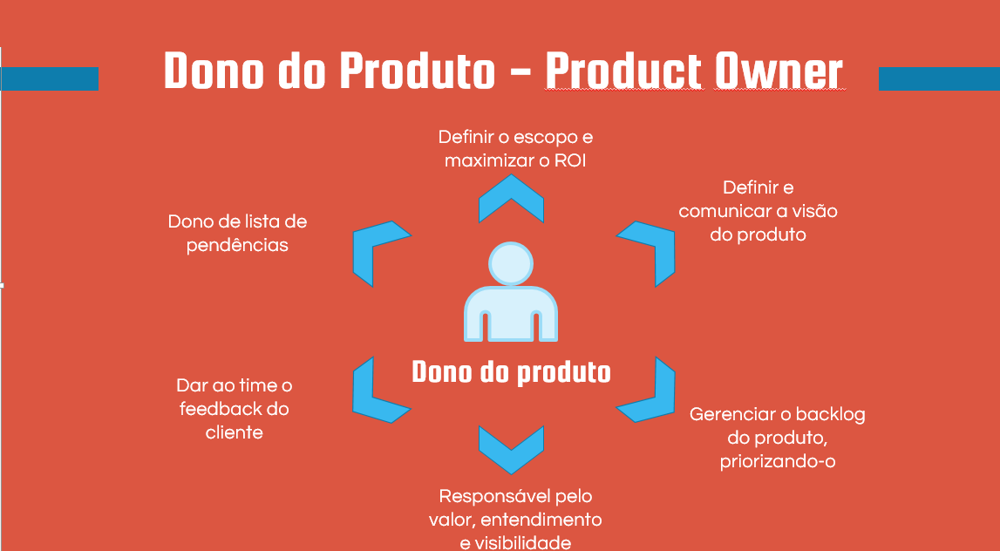

1.0 - Papéis dentro do Scrum
No mundo ágil do desenvolvimento de software, o Scrum se destaca como uma metodologia amplamente adotada. Central para sua eficácia estão os papéis claramente definidos que moldam a dinâmica da equipe. O Product Owner, o Scrum Master e a equipe de Desenvolvimento desempenham papéis cruciais, cada um contribuindo de maneira distinta para o sucesso do projeto. Esta introdução aborda a importância desses papéis dentro do contexto do Scrum, destacando sua função essencial na entrega iterativa e incremental de valor ao cliente.
1.1 - Product Owner
Dentro da metodologia Scrum, o Product Owner desempenha um papel fundamental na criação de valor para o cliente e na orientação do desenvolvimento do produto. Combinando visão estratégica, conhecimento do mercado e compreensão das necessidades dos stakeholders, o Product Owner atua como o guardião do produto, moldando sua direção e maximizando seu valor.
Em essência, o Product Owner é responsável por representar os interesses dos stakeholders, incluindo clientes, usuários e a própria organização, garantindo que as necessidades de todos sejam adequadamente consideradas no desenvolvimento do produto. Para cumprir essa responsabilidade, o Product Owner precisa estar profundamente imerso no contexto do negócio, entendendo as demandas do mercado, as tendências da indústria e as expectativas dos clientes. Um dos principais artefatos que o Product Owner gerencia é o Backlog do Produto. Este é um repositório dinâmico de todas as funcionalidades, melhorias e correções que precisam ser feitas no produto. O Product Owner é encarregado de priorizar e refinar continuamente os itens do Backlog, garantindo que as atividades mais valiosas e estratégicas sejam realizadas primeiro.
Além de gerenciar o Backlog do Produto, o Product Owner é responsável por garantir que a equipe de Desenvolvimento tenha uma compreensão clara dos requisitos do produto. Isso envolve a elaboração de User Stories detalhadas e a colaboração próxima com os membros da equipe para esclarecer dúvidas e garantir que o produto final atenda às expectativas.
Em resumo, o Product Owner desempenha um papel multifacetado no Scrum, combinando habilidades de liderança, visão estratégica e conhecimento do mercado para guiar efetivamente o desenvolvimento do produto. Sua capacidade de priorizar, comunicar e tomar decisões estratégicas é fundamental para o sucesso do projeto e para a entrega de valor contínuo ao cliente.
1.2 - Scrum Master
O Scrum Master desempenha um papel vital como facilitador e defensor dos princípios e práticas desta metodologia. Ao contrário de um gerente tradicional, o Scrum Master não exerce autoridade sobre a equipe, mas sim atua como um líder servo, capacitando e orientando os membros da equipe para alcançar altos níveis de desempenho e eficácia. Uma das principais responsabilidades do Scrum Master é remover obstáculos que possam impedir o progresso da equipe. Isso pode incluir questões técnicas, conflitos interpessoais, ou qualquer outra coisa que possa prejudicar a produtividade. Ao eliminar essas barreiras, o Scrum Master permite que a equipe se concentre no trabalho e alcance seus objetivos de forma eficiente.
Além de remover obstáculos, o Scrum Master também atua como um facilitador, ajudando a equipe a entender e adotar os princípios e práticas do Scrum. Isso inclui facilitar reuniões, como as reuniões diárias (Daily Scrum), reuniões de planejamento de sprint e revisões de sprint, garantindo que sigam a estrutura e os objetivos do Scrum. Um aspecto essencial do papel do Scrum Master é proteger a equipe de interferências externas. Isso significa defender a equipe de demandas excessivas de trabalho, pressões de prazos irrealistas ou qualquer outra coisa que possa comprometer sua capacidade de entregar com qualidade. O Scrum Master age como um escudo, permitindo que a equipe se concentre no trabalho sem distrações externas.

Além disso, o Scrum Master promove um ambiente que favoreça a auto-organização e a melhoria contínua. Isso envolve incentivar a colaboração, a comunicação transparente e a responsabilidade compartilhada dentro da equipe. O Scrum Master também ajuda a equipe a identificar oportunidades de melhoria e a implementar práticas ágeis mais eficazes ao longo do tempo.
1.3 - Time de Desenvolvimento (Dev Team)
Dentro do framework ágil do Scrum, o Time de Desenvolvimento é a espinha dorsal do processo, responsável por transformar os requisitos do cliente em incrementos de funcionalidade do produto. Este grupo multifuncional de profissionais é caracterizado pela sua capacidade de auto-organização, colaboração e foco na entrega contínua de valor. Uma das características fundamentais do Time de Desenvolvimento é sua autonomia. Ao contrário de abordagens tradicionais de gestão de projetos, onde as tarefas são atribuídas de cima para baixo, o Scrum promove a auto-organização da equipe. Isso significa que o Time de Desenvolvimento tem a liberdade e a responsabilidade de determinar como realizar o trabalho de forma mais eficaz.

A autonomia do Time de Desenvolvimento é facilitada pelo conceito de multidisciplinaridade. Em vez de serem especialistas em uma única área, os membros da equipe são encorajados a desenvolver habilidades em diversas áreas relacionadas ao projeto. Isso permite uma colaboração mais estreita e eficaz dentro da equipe, minimizando a dependência de recursos externos e acelerando o processo de desenvolvimento. Além da autonomia, a colaboração é outra pedra angular do Time de Desenvolvimento. Os membros da equipe trabalham juntos de forma estreita e contínua ao longo do ciclo de vida do projeto, compartilhando conhecimento, resolvendo problemas e celebrando sucessos. Isso cria um ambiente de trabalho positivo e produtivo, onde as ideias são valorizadas e o trabalho em equipe é incentivado.
Outro aspecto importante do Time de Desenvolvimento é sua mentalidade de entrega contínua de valor. Em vez de se concentrarem em tarefas individuais ou em detalhes técnicos, os membros da equipe estão focados em entregar incrementos de funcionalidade do produto que agreguem valor ao cliente. Isso requer uma compreensão clara dos requisitos do produto e uma abordagem iterativa e incremental para o desenvolvimento.
Em suma, o Time de Desenvolvimento desempenha um papel vital no sucesso do Scrum, trazendo habilidades variadas, autonomia e colaboração para o processo de desenvolvimento. Sua capacidade de auto-organização, multidisciplinaridade e foco na entrega de valor contínuo são fundamentais para o alcance dos objetivos do projeto e a satisfação do cliente.